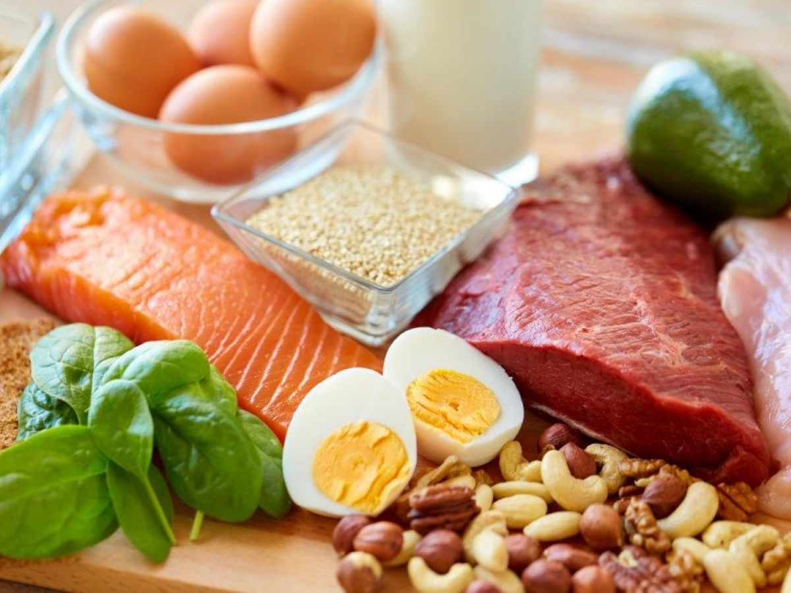

1. Importancia de una buena alimentación
Después de los 60 años el cuerpo necesita menos calorías pero más nutrientes. Una dieta balanceada ayuda a prevenir enfermedades como diabetes, hipertensión y osteoporosis. También mantiene la energía y fortalece el sistema inmunológico.
2. Nutrientes Clave
Vitaminas y minerales esenciales
Los adultos mayores deben prestar atención especial a ciertos nutrientes porque su absorción disminuye con la edad.
- Calcio y Vitamina D: Para huesos fuertes. Se encuentra en lácteos y sol.
- Vitamina B12: Previene anemia y problemas de memoria. En carnes y huevos.
- Fibra: Mejora la digestión. En frutas, verduras y granos integrales.
- Potasio: Controla la presión arterial. En plátano y jitomate.

3. Alimentos Recomendados
La base de la alimentación debe ser natural y variada. Es mejor comer 5 veces al día en porciones pequeñas.
- Verduras de hoja verde: espinaca, acelga, brócoli
- Frutas frescas: manzana, papaya, naranja, frutos rojos
- Proteínas magras: pescado, pollo sin piel, frijoles, lentejas
- Cereales integrales: avena, arroz integral, tortilla de maíz
- Lácteos bajos en grasa: leche, yogur, queso panela

4. Alimentos que se deben evitar
Algunos alimentos empeoran la presión arterial, el azúcar en sangre y la digestión en adultos mayores.
- Exceso de sal y alimentos enlatados
- Azúcar refinada, refrescos y postres muy dulces
- Grasas saturadas: frituras, embutidos, manteca
- Alcohol y cafeína en exceso